Мне нравится играть в игры, особенно в экономические стратегии, хочу рассказать про градостроительный симулятор из детства — Caesar III, как принято говорить, тёплый и ламповый. Игра была выпущена в 1998 году, знатоками своего дела, Impressions Games. Это экономический симулятор управления древнеримским городом в реальном времени. Через много лет я решил вновь пройти её, а затем постараться продлить удовольствие от игры, посмотреть ресурсы и вникнуть в игровую логику с точки зрения программиста.
Под катом я опишу процесс извлечения текстур, поиск игровых алгоритмов и расскажу как хобби превратилось в самостоятельный проект. А еще будет палитра RGB555, IDA, HexRays и немного кода.
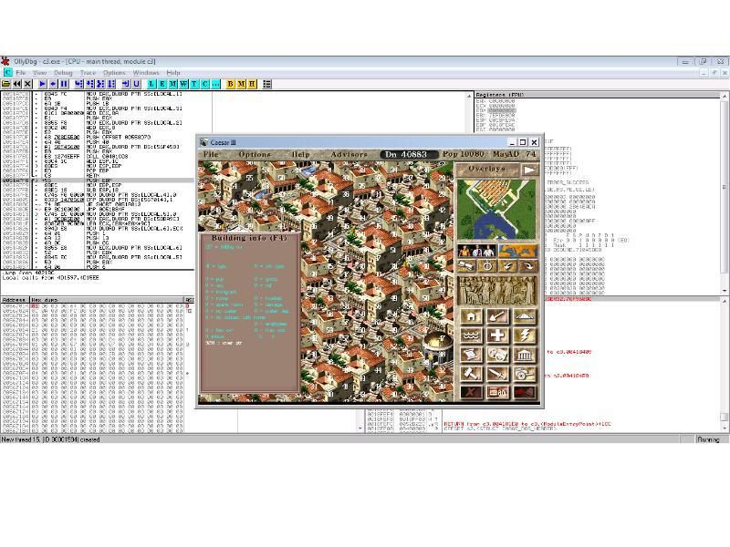
Музыка Про музыку я ничего писать не буду, ибо лежит она никем неупакованная на диске с игрой в формате .wav.
Графика
С графикой(текстурами) все намного сложнее, текстуры разбиты на несколько псевдоархивов с расширением .sg2 и .555.
Файл с расширением .sg2, назовем его “оглавлением“, содержит параметры текстур: размеры, смещение в атласе, имя и номер, идентификатор, различные флаги.
Файл с расширением .555, назовем его “атласом”, содержит сами изображения, в собственном формате описания, которые делятся на три типа: — простые (bmp) — изометрические — с альфа-каналом Для каждого типа текстур используется свой формат “сжатия”. “Оглавление” может ссылаться на несколько атласов, при этом имя “атласа”, должно соответствовать названию группы текстур, которые в нем содержатся. Простые текстуры читаются как массив цветов и их можно практически без обработки рисовать на экране, “обработка” состоит в преобразовании BGR555 цвета с глубиной 5 бит на канал, в более удобный для работы АRGB32. В игре Сaesar III текстуры с прозрачностью не используются, они будут задействованы позже в этой серии игр (Pharaoh, Cleopatra и др)
В файле С3.SG2 содержатся описания групп изображений. Если открыть этот файл в hex-редакторе, то можно увидеть следующий блок данных,
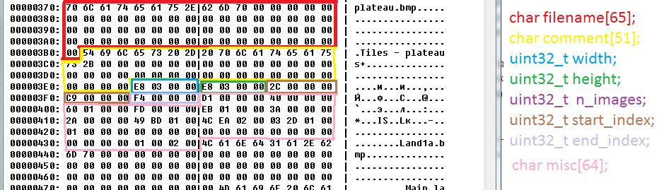
который описывает группу из 44 (n_images: 0x0000002C) изображения с именем plateau, информация о которых начинается с индекса 201 (start_index: 0x000000C9). Всего в «оглавлении» есть место для 100 таких групп. После описания групп, идут описания конкретных изображений, перебирая которые можно восстановить сами картинки. Дело осталось за малым, прочитать оглавление, распаковать пожатые текстуры и собрать их в полноценные изображения. Вот что получилось при распаковке группы plateau
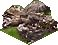
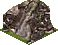
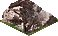
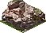
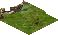
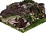
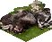
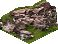
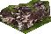
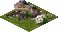
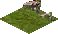
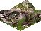
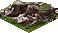
Вот еще несколько восстановленных текстур, в нативном формате, насколько это получилось, без фильтров.
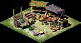
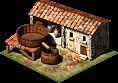
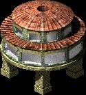
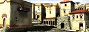
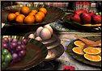
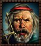
А здесь обработанные текстуры с альфаканалом.
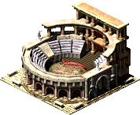
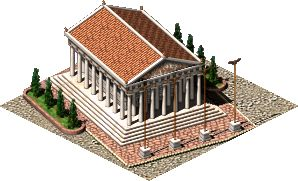
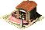
Если с атласом текстур и используемых в нем структурах данных еще можно разобраться, полагаясь на сообразительность, hex-редактор и долю везения, то с алгоритмами восстановления текстур такое не пройдет. И тут на помощь приходит Ильфак с незаменимым отладчиком IDA, и не менее полезным декомпилятором Hex-Rays. Открываем с3.exe в отладчике, видим картину отнюдь не радужную, я большую часть времени программирую на яве(java) или плюсах(c++) и для меня это, не то чтобы темный лес, но густой кустарник точно.
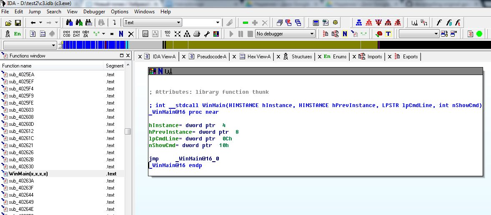
Тут нам поможет способность IDA восстанавливать asm в псевдокод plain-С. Нажимаем F5 и перед нами человеко-читабельный код, с которым уже можно работать.
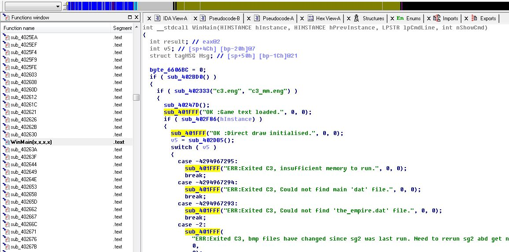
С функциями и переменными, и оформленной структурой, и наверняка проницательный читатель заметил некоторую закономерность в приведенном выше коде, так что давайте сделаем его более читабельным. Нажимаем кнопку N, вводим нормальное имя для функции, и код выглядит намного проще.
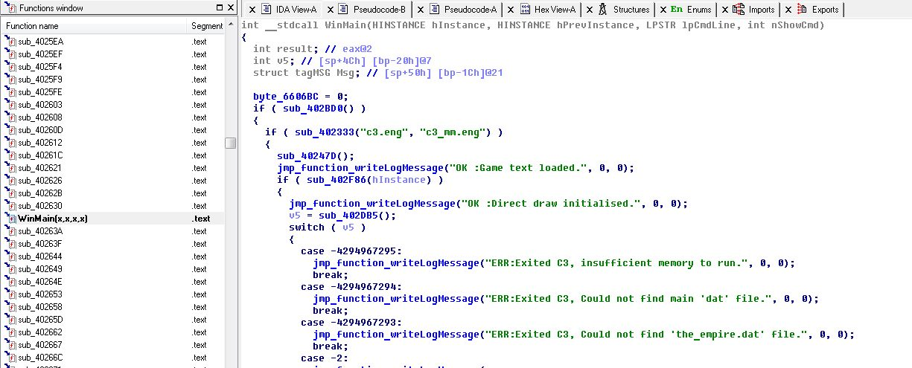
А спустя некоторое время ( день, неделю, месяц и тд) он станет вот таким. Согласитесь, теперь намного удобнее искать алгоритмы
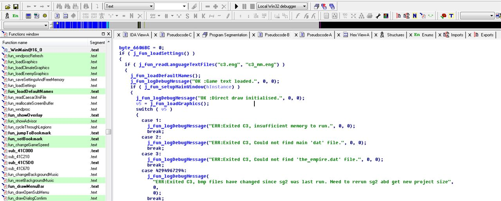
Исполняемый файл игры Caesar III был собран с отладочной информацией компилятором Visual C++ 5.0, что также позволяет восстанавливать логику приложения более продуктивно. Используя отладчик, декомпилятор и собственные серые клетки можно добраться до функции чтения изображений из архива
Показать код — fun_drawGraphic
int __cdecl fun_drawGraphic(signed int graphicId, int xOffset, int yOffset) { int result; // eax@2 LONG v4; // [sp+50h] [bp-8h]@43 drawGraphic_graphicId = graphicId; drawGraphic_xOffset = xOffset; drawGraphic_yOffset = yOffset; if ( graphicId <= 0 ) return 0; if ( graphicId >= 10000 ) return 0; drawGraphic_fileOffset = c3_sg2[graphicId].offset; if ( drawGraphic_fileOffset <= 0 ) return 0; LOWORD(drawGraphic_width) = c3_sg2[graphicId].width; LOWORD(drawGraphic_height) = c3_sg2[graphicId].height; drawGraphic_type = c3_sg2[graphicId].type; graphic_xOffset = xOffset; graphic_yOffset = yOffset; drawGraphic_visiblePixelsClipX = (signed __int16)drawGraphic_width; if ( c3_sg2[graphicId].extern_flag && (signed __int16)drawGraphic_width <= ddraw_width ) { strcpy(drawGraphic_555file, &c3sg2_bitmaps[200 * c3_sg2[graphicId].bitmap_id]); j_fun_changeFileExtensionTo(drawGraphic_555file, &extension_555[4 * graphics_format_id]); if ( !j_fun_readDataFromFilename( drawGraphic_555file, screen_buffer, c3_sg2[graphicId].data_length, c3_sg2[graphicId].offset - 1) ) { j_fun_changeFileExtensionTo(drawGraphic_555file, "555"); if ( !j_fun_readDataFromFilename( drawGraphic_555file, screen_buffer, c3_sg2[graphicId].data_length, c3_sg2[graphicId].offset - 1) ) return 0; if ( c3_sg2[graphicId].compr_flag ) j_fun_convertCompressedGraphicToSurfaceFormat(screen_buffer, c3_sg2[graphicId].data_length); else j_fun_convertGraphicToSurfaceFormat(screen_buffer, c3_sg2[graphicId].data_length); } j_fun_setGraphicXClipCode(); j_fun_setGraphicYClipCode(); if ( drawGraphic_clipYCode == 5 ) return 0; if ( drawGraphic_type ) { if ( drawGraphic_clipYCode == 5 ) return 0; drawGraphic_fileOffset = 2 * (signed __int16)drawGraphic_width * drawGraphic_invisibleHeightClipTop; drawGraphic_fileOffset += 2 * drawGraphic_invisibleWidthClipLeft; if ( drawGraphic_clipXCode == 1 ) { j_fun_drawGraphicUncompressedClipLeft((char *)screen_buffer + drawGraphic_fileOffset); } else { if ( drawGraphic_clipXCode == 2 ) j_fun_drawGraphicUncompressedClipRight((char *)screen_buffer + drawGraphic_fileOffset); else j_fun_drawGraphicUncompressedClipY((char *)screen_buffer + drawGraphic_fileOffset); } } else { if ( c3_sg2[graphicId].compr_flag ) { if ( drawGraphic_clipXCode == 1 ) { j_fun_drawGraphicCompressedClipLeft((char *)screen_buffer); } else { if ( drawGraphic_clipXCode == 2 ) j_fun_drawGraphicCompressedClipRight((char *)screen_buffer); else j_fun_drawGraphicCompressedFull((char *)screen_buffer); } } else { drawGraphic_fileOffset = 2 * (signed __int16)drawGraphic_width * drawGraphic_invisibleHeightClipTop; drawGraphic_fileOffset += 2 * drawGraphic_invisibleWidthClipLeft; if ( drawGraphic_clipXCode == 1 ) { j_fun_drawGraphicUncompressedClipLeft((char *)screen_buffer + drawGraphic_fileOffset); } else { if ( drawGraphic_clipXCode == 2 ) j_fun_drawGraphicUncompressedClipRight((char *)screen_buffer + drawGraphic_fileOffset); else j_fun_drawGraphicUncompressedClipY((char *)screen_buffer + drawGraphic_fileOffset); } } } result = (signed __int16)drawGraphic_width; } else { if ( c3_sg2[graphicId].extern_flag ) { if ( window_id == 21 || window_id == 20 ) { drawGraphic_visiblePixelsClipX = fullscreenImage_width; drawGraphic_visiblePixelsClipY = fullscreenImage_height; drawGraphic_copyBytesInBufferForClipX = 2 * ((signed __int16)drawGraphic_width - drawGraphic_visiblePixelsClipX); drawGraphic_skipBytesInBufferForClipX = 2 * (ddraw_width - drawGraphic_visiblePixelsClipX); j_fun_drawGraphicUncompressedFull(&c3_555[2 * fullscreenImage_xOffset + 13000000] + 2 * (signed __int16)drawGraphic_width * fullscreenImage_yOffset); return drawGraphic_visiblePixelsClipX; } v4 = 2 * (signed __int16)drawGraphic_width * fullscreenImage_yOffset + 2 * fullscreenImage_xOffset; drawGraphic_visiblePixelsClipX = fullscreenImage_width; drawGraphic_visiblePixelsClipY = fullscreenImage_height; strcpy(drawGraphic_555file, &c3sg2_bitmaps[200 * c3_sg2[graphicId].bitmap_id]); j_fun_changeFileExtensionTo(drawGraphic_555file, &extension_555[4 * graphics_format_id]); if ( !j_fun_readUncompressedImageData( drawGraphic_555file, screen_buffer, 2 * drawGraphic_visiblePixelsClipX, drawGraphic_visiblePixelsClipY, v4) ) { j_fun_changeFileExtensionTo(drawGraphic_555file, "555"); if ( !j_fun_readUncompressedImageData( drawGraphic_555file, screen_buffer, 2 * drawGraphic_visiblePixelsClipX, drawGraphic_visiblePixelsClipY, v4) ) return 0; j_fun_convertGraphicToSurfaceFormat( screen_buffer, drawGraphic_visiblePixelsClipY * 2 * drawGraphic_visiblePixelsClipX); } drawGraphic_copyBytesInBufferForClipX = 0; drawGraphic_skipBytesInBufferForClipX = 0; j_fun_drawGraphicUncompressedFull((char *)screen_buffer); result = drawGraphic_visiblePixelsClipX; } else // internal { if ( (unsigned __int8)drawGraphic_type == 30 )// isometric { switch ( (signed __int16)drawGraphic_width ) { case 58: LOWORD(drawGraphic_height) = 30; break; case 26: LOWORD(drawGraphic_height) = 14; break; case 10: LOWORD(drawGraphic_height) = 6; break; default: if ( (signed __int16)drawGraphic_width == 118 ) return j_fun_drawBuildingFootprintSize2(); if ( (signed __int16)drawGraphic_width == 178 ) return j_fun_drawBuildingFootprintSize3(); if ( (signed __int16)drawGraphic_width == 238 ) return j_fun_drawBuildingFootprintSize4(); if ( (signed __int16)drawGraphic_width == 298 ) return j_fun_drawBuildingFootprintSize5(); break; } } j_fun_setGraphicXClipCode(); j_fun_setGraphicYClipCode(); if ( drawGraphic_clipYCode == 5 ) { result = 0; } else { if ( drawGraphic_type ) { if ( (unsigned __int8)drawGraphic_type == 30 ) { if ( drawGraphic_clipXCode == 1 ) { switch ( (signed __int16)drawGraphic_width ) { case 58: j_fun_drawBuildingFootprint_xClipRight(&c3_555[drawGraphic_fileOffset], drawGraphic_clipYCode); break; case 26: j_fun_drawBuildingFootprint_26px_xClipRight(); break; case 10: j_fun_drawBuildingFootprint_10px_xClipRight(); break; default: j_fun_drawGraphicUncompressedClipLeft(&c3_555[drawGraphic_fileOffset]); break; } } else { if ( drawGraphic_clipXCode == 2 ) { switch ( (signed __int16)drawGraphic_width ) { case 58: j_fun_drawBuildingFootprint_xClipLeft(&c3_555[drawGraphic_fileOffset], drawGraphic_clipYCode); break; case 26: j_fun_drawBuildingFootprint_26px_xClipLeft(); break; case 10: j_fun_drawBuildingFootprint_10px_xClipLeft(); break; default: j_fun_drawGraphicUncompressedClipRight(&c3_555[drawGraphic_fileOffset]); break; } } else { switch ( (signed __int16)drawGraphic_width ) { case 58: j_fun_drawBuildingFootprint_xFull(&c3_555[drawGraphic_fileOffset], drawGraphic_clipYCode); break; case 26: j_fun_drawBuildingFootprint_26px_xFull(); break; case 10: j_fun_drawBuildingFootprint_10px_xFull(); break; default: j_fun_drawGraphicUncompressedClipY(&c3_555[drawGraphic_fileOffset]); break; } } } } else { if ( (unsigned __int8)drawGraphic_type == 13 && drawGraphic_clipXCode ) { j_fun_drawImage_32x32((int *)&c3_555[drawGraphic_fileOffset]); } else { if ( (unsigned __int8)drawGraphic_type == 12 && drawGraphic_clipXCode ) { j_fun_drawImage_24x24((int *)&c3_555[drawGraphic_fileOffset]); } else { if ( (unsigned __int8)drawGraphic_type == 10 && drawGraphic_clipXCode ) { j_fun_drawImage_16x16((int *)&c3_555[drawGraphic_fileOffset]); } else { if ( (unsigned __int8)drawGraphic_type == 2 && drawGraphic_clipXCode ) { j_fun_drawGraphicType2(&c3_555[drawGraphic_fileOffset]); } else { if ( (unsigned __int8)drawGraphic_type == 20 ) { if ( drawGraphic_clipXCode == 1 ) { j_fun_drawGraphicLetterColoredClipLeft(&c3_555[drawGraphic_fileOffset]); } else { if ( drawGraphic_clipXCode == 2 ) j_fun_drawGraphicLetterColoredClipRight(&c3_555[drawGraphic_fileOffset]); else j_fun_drawGraphicLetterColoredFull(&c3_555[drawGraphic_fileOffset]); } } else { drawGraphic_fileOffset += 2 * (signed __int16)drawGraphic_width * drawGraphic_invisibleHeightClipTop; drawGraphic_fileOffset += 2 * drawGraphic_invisibleWidthClipLeft; if ( drawGraphic_clipXCode == 1 ) { j_fun_drawGraphicUncompressedClipLeft(&c3_555[drawGraphic_fileOffset]); } else { if ( drawGraphic_clipXCode == 2 ) { j_fun_drawGraphicUncompressedClipRight(&c3_555[drawGraphic_fileOffset]); } else { if ( drawGraphic_clipYCode ) j_fun_drawGraphicUncompressedClipY(&c3_555[drawGraphic_fileOffset]); else j_fun_drawGraphicUncompressedFull(&c3_555[drawGraphic_fileOffset]); } } } } } } } } } else // type == 0 { if ( c3_sg2[graphicId].compr_flag ) { if ( drawGraphic_clipXCode == 1 ) { j_fun_drawGraphicCompressedClipLeft(&c3_555[drawGraphic_fileOffset]); } else { if ( drawGraphic_clipXCode == 2 ) j_fun_drawGraphicCompressedClipRight(&c3_555[drawGraphic_fileOffset]); else j_fun_drawGraphicCompressedFull(&c3_555[drawGraphic_fileOffset]); } if ( drawGraphic_colorMask ) { if ( drawGraphic_clipXCode == 1 ) { j_fun_drawGraphicCompressedColorMaskClipLeft(&c3_555[drawGraphic_fileOffset], drawGraphic_colorMask); } else { if ( drawGraphic_clipXCode == 2 ) j_fun_drawGraphicCompressedColorMaskClipRight(&c3_555[drawGraphic_fileOffset], drawGraphic_colorMask); else j_fun_drawGraphicCompressedColorMaskFull(&c3_555[drawGraphic_fileOffset], drawGraphic_colorMask); } } } else // not compressed { drawGraphic_fileOffset += 2 * (signed __int16)drawGraphic_width * drawGraphic_invisibleHeightClipTop; drawGraphic_fileOffset += 2 * drawGraphic_invisibleWidthClipLeft; if ( drawGraphic_clipXCode == 1 ) { j_fun_drawGraphicUncompressedClipLeft(&c3_555[drawGraphic_fileOffset]); } else { if ( drawGraphic_clipXCode == 2 ) j_fun_drawGraphicUncompressedClipRight(&c3_555[drawGraphic_fileOffset]); else j_fun_drawGraphicUncompressedClipY(&c3_555[drawGraphic_fileOffset]); } } } result = drawGraphic_visiblePixelsClipX; } } } return result; }На основе это кода можно будет построить приложение, которое сможет отображать текстуры используемые в игре.
Хобби Было бы странно, если бы пост про бэк-инжиринг игры заканчивался ссылкой на чужую прогу ))) Мое увлечение моддингом ресурсов игры переросло сначала в написание ряда фиксов, исправляющих некоторые ошибки, а теперь и в полноценный ремейк игры. Если Вам не очень интересно читать размышления о целях проекта и авторских правах, вы можете перейти в раздел загрузок и посмотреть насколько у меня получилось приблизиться к оригиналу.
Каковы цели у ремейка + Дать возможность другим людям поиграть в забытую игру и не только под Windows. + Играть в Caesar III без эмуляторов, танцев с бубном, возни с запуском игры под Wine, дикого на текущий момент разрешения 800х600. + Повысить качество текстур, шрифтов и скорости игры. + Получить удовольствие от разработки — я люблю играть в игры, особенно экономические, и мне очень не нравится когда игра глючит, вылетает или работает неправильно. Мне проще сделать ремейк, чем писать свою игру, ведь к свои программам я отношусь очень критично, стараясь убрать глюки и по максимуму настроить баланс. Но результат всегда чуть хуже, чем ожидаешь, наверное поэтому на создание своего проекта уходит времени в разы больше. + Добавить наконец сетевую игру, которой мне так не хватало в детстве. + На планшете побить варваров, стоя в пробке — согласитесь намного интереснее, чем донатить в ферму. + Сделать хороший перевод, не только для русскоговорящих, а например для французов, до них игра дошла на английском.
Что делать с авторскими правами Вариантов немного: 1. Забить и делать то, что хочешь — не наш путь, мы ведь цивилизованные люди, не хочется тратить громадное количество времени на ремейк, чтобы авторы оригинала запретили его на финише. 2. Писать на почту правообладателем и просить разрешения (устное, разрешение на использование ресурсов или бренда, «на бумаге» и пр.). Тут еще хуже, цивилизованные авторы, или держатели прав( на данный момент это Activision), как правило держатся за них до последнего, даже если игра не приносит прибыли. Права есть — значит ремейка не будет. Точка. 3. Позиционировать игру как мод, которому для работы нужна оригинальная игра, скачанная с торрента честно купленная на GOG.com, так поступили например Corsix TH, выпустив ремейк Theme Hospital. Самый оправданный и безопасный путь, хотя…
Старые игры не значит плохие. Многие старые игры, если с них сдуть пыль, подчистить, подмазать и подклеить… Эти игрушки заткнут за пояс многие современные поделки. Вадим Балашов
Благодарю, что дочитали до конца!
P.S. Отдельное спасибо людям, которые помогают в развитии ремейка. Bianca van Schaik (http://pecunia.nerdcamp.net/), back-инжиниринг оригинальной игры Gregoire Athanase (http://sourceforge.net/projects/opencaesar3/), автор рендера и многих алгоритмов George Gaal (https://github.com/gecube/opencaesar3) back-инжиниринг сейвов и многие другие коммитеры
UPD1. Eсли Вы заинтересовались результатами бэк-инжиринга этой игры (exe + idb), лучше наверно связаться через почту или ПМ, тема, что называется «gray legal area». Для ознакомления с игрой использовался IDA 5.5 + Hex-Rays 1.01. Файлы и материалы выложены с разрешения Bianca van Schaik (http://caesar.biancavanschaik.nl/).
UPD2. Почему это пост попал в хаб linux. OllyDbg u IDA запущены на виртуалке Win7, для разработки используется QtCreator 3.0.1 + cmake + gcc 4.8, игра нативно пишется для linux. Для сборки под Windows используется кросскомпилятор mingw-w64, для MacOSX и Haiku подняты виртуальные машины. Для сборки под андроид используется окружение из libsdl-android.
← Все статьи